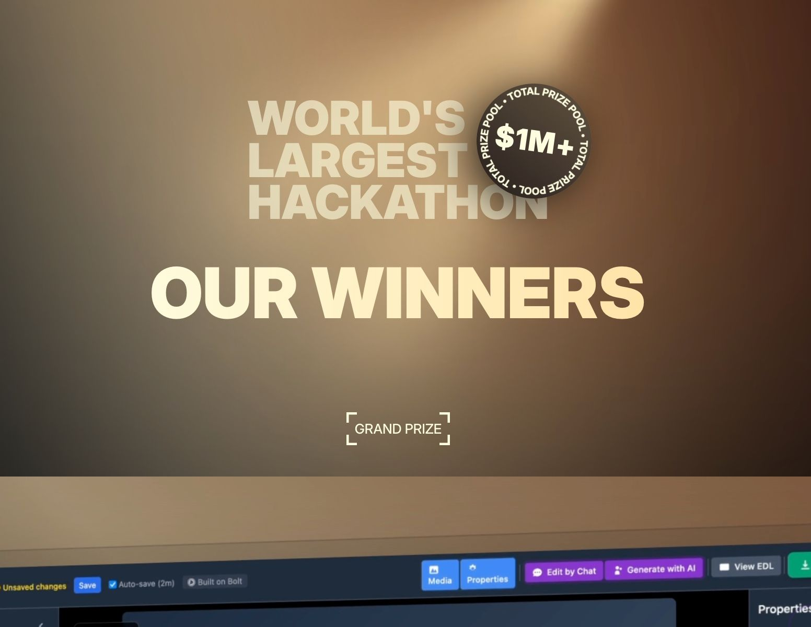

עורך וידאו בפקודות טקסט, עוזרת קולית למתכונים מותאמים אישית, ומערכת מאובטחת לניהול מפתחות API - אלו שלושת המיזמים שזכו במקומות הרא
פורסם במקור ב LinkedIn
עורך וידאו בפקודות טקסט, עוזרת קולית למתכונים מותאמים אישית, ומערכת מאובטחת לניהול מפתחות API - אלו שלושת המיזמים שזכו במקומות הראשונים בהאקתון הגדול בעולם של bolt.new.
זוכרים שבחודש שעבר פרסמתי שההאקתון הגדול בעולם יוצא לדרך? אז הוא הסתיים והנה התוצאות לפניכם:
מעל 40,000 משתתפים, חודש אחד של בנייה, והנה שלושת הזוכים הבולטים:
Tailored Labs - עורך וידאו חכם שפועל על פקודות טקסט
Weight Coach - עוזרת קולית לתכנון ארוחות מותאם אישית
KeyHaven - מערכת לניהול מאובטח של מפתחות API
אבל דווקא השיטוט בין המקומות 4 עד 10, וגם בין הזוכים באתגרים הקטגוריאליים, חושף מבט רחב ומעודכן על מה שמעניין מפתחים היום, וגם על מה שמרגש משקיעים, מנהלים ומשתמשים.
יש שם מערכת CRM לחברות ניקיון מסחריות, סוכן קולי שמאשר פגישות בטלפון, סביבה שמאפשרת לבדוק מאות מודלים של שפה, פלטפורמה שעוזרת לבחור ביטוח בריאות, וגם אפליקציה לגיימיפיקציה של מתמטיקה לבני נוער.
לא מדובר רק ברעיונות יצירתיים, אלא גם ביכולת מרשימה להפוך חזון לאב-טיפוס פעיל - לעיתים תוך ימים.
חלק מהפרויקטים כבר עלו לחנויות האפליקציות, ורובם כבר גובים תשלום.
הגלריה כולה פתוחה לצפייה, עם הסברים, סרטונים ולעיתים גם קוד.
שווה להקדיש רבע שעה לשיטוט חופשי בין הרעיונות. לא רק כדי לראות מה אפשר לעשות עם AI, אלא כדי להזכיר לעצמנו איך נראה רעב אמיתי לבנייה.
שווה להתעכב קצת ולהסתכל על הזוכים, אתרים מעניינים שגורמים לך לא להאמין שהם נבנו על ידי מערכת וובית לבניית אתרים בעזרת פרומפטים:
